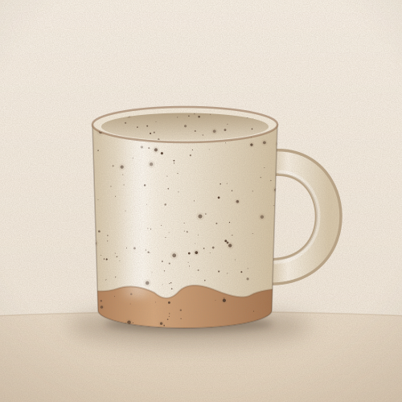
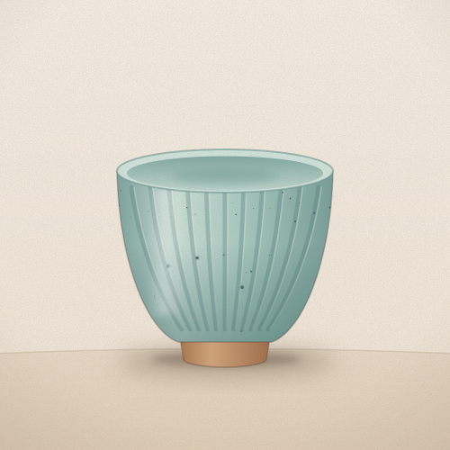
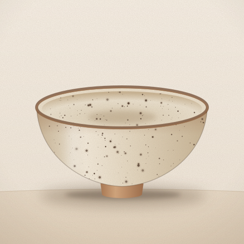
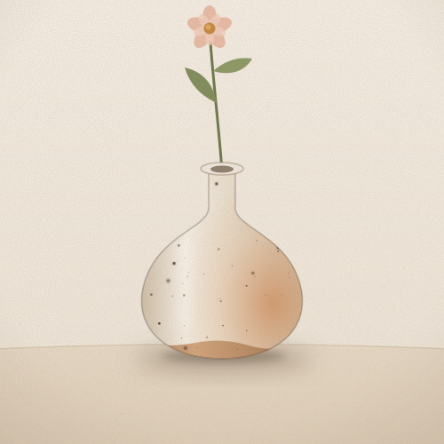
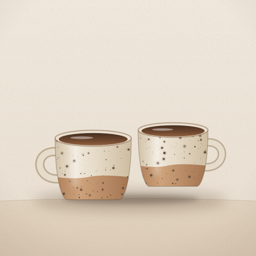
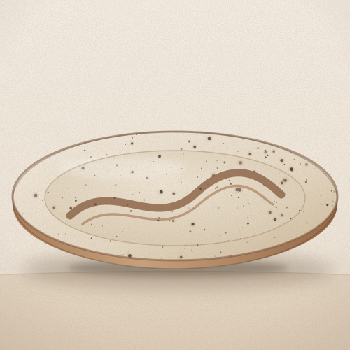

Shop
6 pieces
Our everyday mug!! Oatmeal-white glaze with little iron speckles that come through in the firing. Holds a really generous pour of coffee. Every one is a bit different.
message to order
Carved by hand, then dipped in celadon so the glaze pools darker in the lines. No handle — I use mine for tea but it's great for sake too. About 8 oz.
message to order
The bowl I eat ramen out of every single day. The glaze breaks dark brown where it thins over the rim. Dishwasher safe.
message to order
For one stem from the yard. Matte white glaze, and the kiln flashed this batch a warm toasty orange on one side. 5 in tall.
message to order
Two little cups for two little coffees. Speckled clay with the bottom left raw, glossy brown on the inside.
message to order
Big oval platter for sharing, with a brushed iron line across the middle. These take weeks to dry slowly so I only make a few each season. Sizes vary, send me a message!
message to order